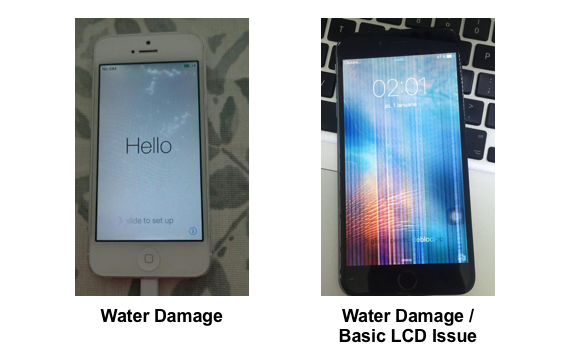
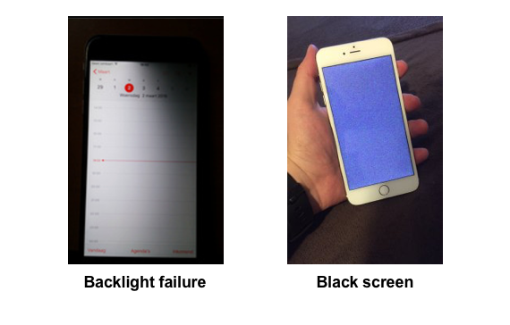

Using a cracked iPhone screen can be very annoying, and even dangerous if glass chips off. Replacing the screen might seem risky and expensive, but surprisingly enough it is very cheap and relatively risk-free, and can be done in half an hour.
REASONS TO REPLACE SCREEN...
-
Water Damage
- If the screen if mostly or fully touch-sensative, but has obvious blots of water on the inside, It can easily be fixed with a new LCD.
- Dropping your phone in water can also result in other LCD defects. For example, it is common to have vertical or horizontal lines lining certain parts of the display.
- Failed Backlight
- You know how on watches there's a button to illuminate a backlight so you can see the time in a dark environment? LCD screens use a similar technology, except the backlight is always on while using the display. If the screen seems like its black, put it under a bright light and turn it on, to see if you can see any faint shapes, if so it means the backlight has failed. The backlight is replaced when the LCD is replaced.
- Black screen
- If the screen doesn't turn on, just faintly lights up, then you might have the opposite of a backlight failure, the backlight working and the LCD not.


WHAT YOU GET WITH A NEW SCREEN

When you order a new screen, you get one similar to the picture above/left. The entire face of the phone is replaced, so if you had any scratched or chips on the bezels of the phone, they would be fixed with a new LCD.